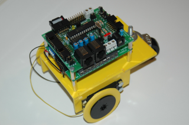
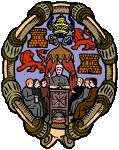
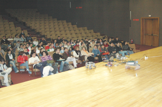
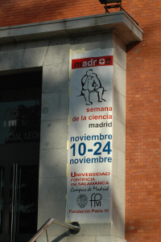
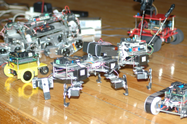
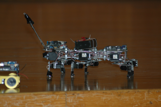
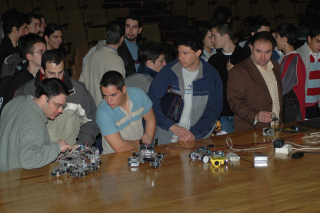

|
“Robótica en la Universidad (II)”.UPSAM. Nov-2004 |
|
 |
 |
Título: “Robótica en la Universidad (II)”
Evento: IV Semana de la Ciencia en Madrid. Ciclo de conferencias sobre robótica.
Lugar: Universidad Pontificia de Salamanca en Madrid (UPSAM)
Fecha: 22 de Noviembre de 2004
Ponente:Andrés Prieto-Moreno (Ifara Tecnologías)
En la construcción de un robot convergen principalmente las disciplinas "mecánica" , "electrónica" y "programación". En esta charla estudiaremos de forma rápida y sencilla las ventajas y los inconvenientes de las distintas alternativas de cada una de ellas, desde el punto de vista de la construcción de robots móbiles con ruedas .
|
Descarga de la presentación |
|
ruedas-upsam-nov-2004.sxi (1,8MB) |
Presentación para OpenOffice 1.1.2 |
|
ruedas-upsam-nov-2004.pdf (1,0MB) |
Presentación en PDF |
Se condecen permisos para usar, modificar y/o distribuir esta presentación, siempre que se mantenga esta nota.
Tarjeta Skypic, entrenadora para microcontroladores PIC de 28 pines.
Tarjeta ct293+. Control de motores y sensores.
Cuaderno técnico II, trucaje de los servos Futaba
Cuaderno técnico III. Servos Futaba 3003. Características, planos y modelo 3D.
Artículo presentado en el Clawar 2004, sobre Cube Revolutions: “Locomotion of a Modular Worm-like Robot using a FPGA-based embeded MicroBlaze Soft-processor”
Taller en la UAX. I taller de robótica celebrado en la universidad Alfonso X el Sabio, en Madrid.
Perro robot PUCHOBOT.
Robot ápodo Cube Reloaded (Versión anterior a Cube Revolutions)
La conferencia tuvo lugar el Lunes 22 de Noviembre, en el salón de actos de la Universidad Pontificia de Salamanca en Madrid (UPSAM). Fue la segunda de un ciclo de tres charlas sobre robótica.
|
 Salón de actos de la Universidad Pontificia de Salamanca, Campus de Madrid. La gente está entrando y sentándose frente al escenario, donde están expuestos los robots. |
 Cartel anunciando la IV semana de la ciencia |
|
 Detalle de los robots presentados para la demostración: Puchobot, La Hormiga, Skybot, Robot clónico y el robot “Telecontrolado” |
 “La Hormiga”, el robot hexápodo
|
|
 La gente viendo los robots de cerca, al final de la charla. |
A David Olmos, por la organización de las charlas.
A los profesores Carlos Soria y Enrique Fernández, por proponerme para dar las charlas de robótica.
29/Nov/2004: Publicada información en esta web